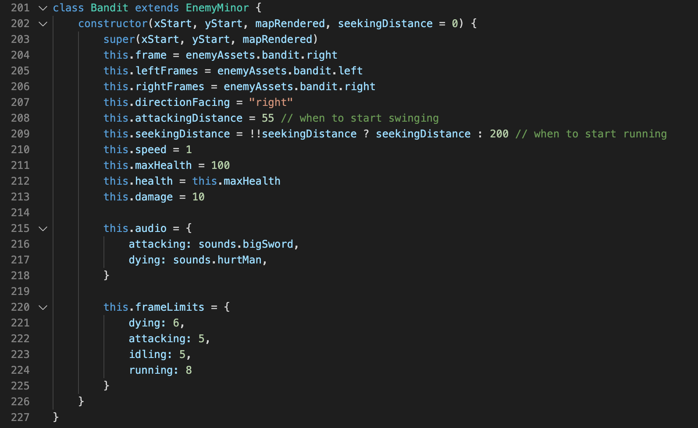

Purpose
The main purpose of this document is to describe the general overview of the codebase for Club P3nguin. Here, I dive a bit more technical into implementation in multiple different areas within the game while expanding on challenges and solutions.
Please note that this document does NOT include everything and for the most detailed view of implementations, I would recommend checking out my github here, to see the full code.
Main Overview
An important starting note is to explain my use (and arguably abundance) of using classes within this game. My mindset is continuously thinking about future development and making code into production mode. Even for single instance objects, I tend to make classes with them to help for future development as as well as to help me better conceptualize different objects. With an game such as this, there are certainly a ton of different objects going on that interact with each other so it certainly helps to group certain objects together and rely on inheritance. Inheritance in classes was used in Enemies specifically (which we will go into depth about later) to help differing enemies have some uniqueness to them while having their general foundation remain the same.
Player
To start off the more in-depth dissection of the project, I will first discuss the player character. My goal with the player was to make him as simple as possibility as this entire game was never meant to be something extremely unique or challenging to learn with a steep learning curve. My philosophy was to have the player enter the game and jump straight into the story with no delays.
The player has its standard display to draw the appropriate character image onto the screen, but an An important attribute of the player is that the player has something called 'action'. Action is actually used extensively throughout the game from the player (as just mentioned) to each enemy and boss. The action has a few potential options including: 'running', 'attacking', 'dying', and 'idling'. With each of these actions, the player object is able to accurately render the appropriate image to be displayed. For example, if the action of the player is fighting, then the fighting images will be displayed. With different actions, there also brings a bit of an issue with rendering each frame. This is why I also use a 'currentFrame' counter and shuffles through each frame for the player to create a smooth animation. As the currentFrame gets updated at x interval seconds, the next image comes up so that an illusion of the action is created as opposed to merely a still image.
The player also utilizes a moving action that simply moves the world around him to give the illusion of the player walking through an icy environment. What is interesting is that this illusion brings some difficulty to other non-player objects that need to updated with the relative offset of the player's moving direction.
Enemies
Going off from explaining the player's build, the enemy build is quite similar with some key differences. For similarities, the enemies also rely on currentFrames and actions to display appropriate images and, subsequently, actions. A key difference against the player, however, is that the enemies are all AI (obviously). This prevents a new challenge where an added function of 'closeDistance' was added that had the enemies detect if the player is near them to then start to close that distance to attack the player. How this was implemented was merely added a seekingDistance to each enemy that checked the distance to the player, but this also introduced a rather large problem.
A massive problem with AI enemies is that the enemies are not too smart with it comes to being blocked by objects. It is quite easy for the player to merely be blocked off by trees with some conditions but enemies are much more difficulty as they would need to preemptively generate a clear path to the player rather than getting stuck in a tree. I implemented some simple conditions to help the enemies out with as this prevents them from phasing through walls, but it is certainly not perfect. In terms of bugs, this is the biggest one in my opinion where enemies can still get stuck if the player decides to loop the enemy around an object (like a tree). While I know this a bug and have solved for it slightly with simple collision detection, I ultimately decided that creating a function to create a clear path for each enemy would be FAR too difficult to implement and would honestly have a very little payoff. While this goes against my mentality of creating production-ready projects, I felt as if this was far too advanced for a simple game.
To allude to a previous comment, enemies are also based quite a bit on inheritance as well. What this means is that I created some parent classes to house some very general functionality that applies to all enemies (such as the frames and actions), but made subclasses based on each enemy type that gave each enemy a unique flavor. While possibly overkill, this allowed me to add additional enemies extremely easily by just creating a new object with the appropriate assets and give it some simple attributes like health, damage, speed, etc.
Bosses
Bosses go off this idea of class inheritance as bosses are merely enemies that a little bit more 'souped up'. Some differences include a health bar with a fresh design to that of regular enemies, as well as, more importantly, special attacks. In Club P3nguin, I have two bosses: a cyclops and a demon. Both of these bosses have some special attacks that make them stand out from typical enemies that just run up to the player and start wack wacking. For example, the cyclops actually throws rocks at the player that not only do a tremendous amount of damage, but also block the player's path. The demon as a few other special attacks such as spawning enemies, shooting volleys, and shooting a sniper shot. In terms of these special attacks, I had to create each one individually while sharing the general boss functionality.
The projectiles for these bosses were actually the most difficult to implement as it involved an image being moved across the screen towards the player. I accomplished this challenge by using the Lerp function that makes the thrown object move in a linear path towards its destination. This allowed me to create a projectile class that housed attributes such as speed, image, damage, etc while also being simple to expand on. The lerp function creates the path and the projectile class just maps a specific object to that path, creating the cyclops throwing a rock or the demon shooting fireballs.
Map
The map was rather simple to implement. By using a 2d array, I just used standard drawing world functions that would map an image to its appropriate ID. While I naturally overcomplicate things, I felt as if creating a map builder tool for assembling all 5 maps would be too overkill so I prompted to just manually write up the ids in the arrays. This was a mistake.
I learned real quick that writing up id after id was not only massively time-consuming, but also killed my own mentality as I would literally just be spending hours looking at 00s and 01s. I think I had a few dreams of the rows upon rows of digits actually. Regardless, I did manage to push through it all and at the end of the day, manually creating the ids and putting them into the arrays gave me great control of each object placed in the map and I believe served as a higher quality then if I created a map builder.
Environment
This part was actually one of the favorite implementations for this game where I implemented three key components: snow, blizzard, and footprints. This area was, once again, where I wanted to really immerse the player into the world. Creating the snow and blizzard effect were essentially the same by using a Snowflake object that was called that made each snowflake fall slowly down using perlin noise and was then recycled after reaching the bottom to prevent massive lag. The difference with the blizzard was that I merely added a ton more snowflakes that traveled at faster speeds. This was accomplished using simple for loops. I also added a simple conditional that made the player's speed halved when he was in the blizzard for a bit more difficulty and to continue with that 'real-world' experience.
Another minor detail I added was to give the ability for the player and enemies to have footprints in the snow. I implemented this by also reading where the player and enemies were standing and detecting if they were on top of a snow block. If they were, then I would just change the snow image to an image with footprints. This was a small detail that I believe greatly increased the experience of the game.
Story Progression
This story progression was actually very simple in theory but the implementation was naturally tedious. The core component of this was working with an index that tracked the user's progress. This was mapped to certain dialogue prompts that made the story linear and triggered at the appropriate time. For example, the demon being killed at the end sets the currentStage to 5 that triggers the end scene and its corresponding dialogue.
The tedious parts came when it was time to test and debug where it was naturally difficult to test different parts of the game and its dialogue without going through each level by itself.